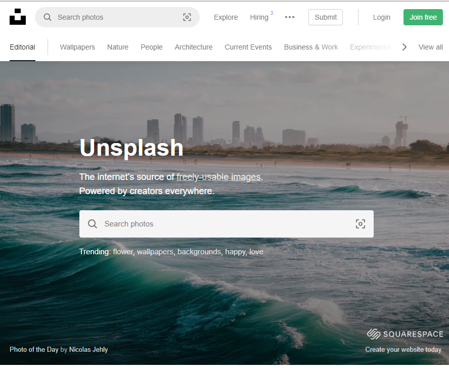
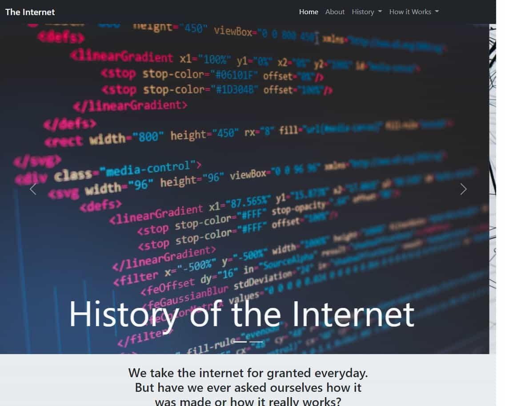

Automatic Mass Email Sender

- Implemented GMAIL API using Python to automatically send the same email to thousands of recipients using
a text file or an excel file.
- Allows for a customizable subject not available when using bcc
-
Unsplash Image Downloader

- Implemented Unsplash API using Python.
- User can enter a search term, number of pictures they wish to download, and in which orientation. Saves
pictures to a designated folder and names each image accordingly.
-
History of the Internet and How it works

- This website relays information about the conception of the internet and how it has evolved into what we
know today
- Information was compiled with a partner, and the website was built on my own using the Bootstrap
Framework
-